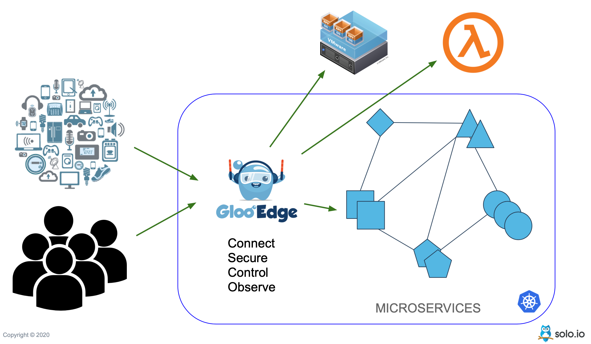

Gloo Edge on EKS-A in 5 minutes¶
Overview¶
In my personal opinion there is always a myth that API Gateways are for cloud or can only with be used with public cloud providers. But that is not the truth, API Gateways are suited for any architecture public, private or hybrid cloud. The only basic requirement for it is to have API ;).
Gloo Edge is an open-source, flexible and extensible API Gateway built on Envoy Proxy for microservices environments. Gloo Edge configures the behavior of the Envoy Proxy data plane to ensure secure application connectivity and policy based traffic management.

In this blog post, let us burst the myth and explore how we can setup API Gateway with Gloo Edge in hybrid cloud infrastructure with EKS-A and connect a AWS Lambda function using Gloo Edge.
What we need ?¶
Cloud Infrastructure¶
- VMWare Cloud - Infrastructure to deploy
eks-aKubernetes cluster.
AWS Account - An AWS account with permissions to create and execute AWS Lambda Function.
Tools¶
Lastly you might need Gloo Edge Enterprise License Key to deploy Gloo Edge on to the eks-a infrastructure.
Demo Sources¶
Clone the demo sources from the GitHub respository,
git clone https://github.com/kameshsampath/gloo-edge-eks-a-demo
cd gloo-edge-eks-a-demo
For convinience, we will refer the clone demo sources folder as $DEMO_HOME,
export DEMO_HOME="$(pwd)"
Ensure Environment¶
We will set the following environment variables for convinience and we will be referring to these variables in upcoming sections.
export AWS_ACCESS_KEY_ID=<your aws access key>
export AWS_SECRET_ACCESS_KEY=<your aws secret key>
export AWS_DEFAULT_REGION=<the aws region to use for the resources>
EKS-A Cluster¶
To create the EKS cluster run the follwing command,
eks-a create cluster -f gloo-edge.yaml # (1)
gloo-edge.yaml- will be generated using theeks-a generatecommand. For more information on the command please refer to TODO Link to eks-a docs .
Configure Storage Class¶
The demo clusters does not have any default storage provisoners or storage class defined. For this demo we will use rancher’s local-path-provisoner.
kubectl apply \
-f https://raw.githubusercontent.com/rancher/local-path-provisioner/master/deploy/local-path-storage.yaml
Wait for the storage provisioner to be ready,
kubectl rollout status -n local-path-storage deploy/local-path-provisioner --timeout=60s
Once the provisioner is installed, check the same using the command kubectl get sc.
NAME PROVISIONER RECLAIMPOLICY VOLUMEBINDINGMODE ALLOWVOLUMEEXPANSION AGE
local-path rancher.io/local-path Delete WaitForFirstConsumer false 6d13h
As you have noticed from the command output about local-path is not the default storage class. Default storage class helps in dynamic provisioning of the Kubernetes Persistent Volumes.
Let us set it as default storage class so that any new PVC requests will be created using this Storage class’ underlying storage.
kubectl patch storageclass local-path \
-p '{"metadata": {"annotations":{"storageclass.kubernetes.io/is-default-class":"true"}}}'
Running the kubectl get sc again shows the local-path as the default provisoner,
NAME PROVISIONER RECLAIMPOLICY VOLUMEBINDINGMODE ALLOWVOLUMEEXPANSION AGE
local-path (default) rancher.io/local-path Delete WaitForFirstConsumer false 6d13h
Install Gloo Edge Enterprise¶
Download and install latest glooctl by running,
curl -sL https://run.solo.io/gloo/install | sh
Add glooctl to the system path,
export PATH=$HOME/.gloo/bin:$PATH
Gloo Edge proxy is a Kubernetes service of type LoadBalancer, for the purpose of this blog we will configure it to be of type NodePort using the install-ee-values.yaml as shown below,
gloo:
settings:
writeNamespace: gloo-system
watchNamespace:
- gloo-system
- fruits-app
gatewayProxies:
gatewayProxy:
service:
type: NodePort
httpNodePort: 30080 # (1)
httpsNodePort: 30443 # (2)
- Use
30080as NodePort to access the Gloo Proxy - Use
30443as NodePort to access the Gloo Proxy
glooctl install gateway enterprise \
--license-key "$GLOO_LICENSE_KEY" \
--values "$DEMO_HOME/cluster/install-ee-values.yaml"
Note
- You can safely ignore the helm warnings
- It will take few minutes for the gloo to be ready, try the command
glooctl checkto verify the status.
Once the gloo edge is deployed check if Gloo Edge is functional,
glooctl check
A successful gloo edge installation should show an output like,
Checking deployments... OK
Checking pods... OK
Checking upstreams... OK
Checking upstream groups... OK
Checking auth configs... OK
Checking rate limit configs... OK
Checking VirtualHostOptions... OK
Checking RouteOptions... OK
Checking secrets... OK
Checking virtual services... OK
Checking gateways... OK
Checking proxies... OK
Checking rate limit server... OK
No problems detected.
I0818 09:29:26.773174 6734 request.go:645] Throttling request took 1.041899775s, request: GET:https://127.0.0.1:57778/apis/storage.k8s.io/v1?timeout=32s
Detected Gloo Federation!
Deploy AWS Lambda Function¶
With us having created an eks-a cluster and deployed Gloo Edge on to it successfully, let us now create AWS Lambda function and use Gloo Edge to invoke it.
Create AWS IAM Role¶
aws iam create-role --role-name gloo-edge-eks-a-lambdaex \
--assume-role-policy-document "file://$DEMO_HOME/apps/lambda/trust-policy.json"
Save the Role ARN environment variable,
export ROLE_ARN=$(aws iam get-role --role-name gloo-edge-eks-a-lambdaex | jq -r .Role.Arn)
Attach the AWSLambdaBasicExecutionRole to our role,
aws iam attach-role-policy --role-name gloo-edge-eks-a-lambdaex \
--policy-arn arn:aws:iam::aws:policy/service-role/AWSLambdaBasicExecutionRole
Create Lambda Function¶
The demo already has ready to deploy simple nodejs hello world application,
exports.handler = async (event) => {
const response = {
statusCode: 200,
body: {"message": `Hello ${event.user?event.user:"there"}, welcome to Gloo Edge with Lambda.,`},
};
return response;
};
Let us deploy that function using AWS Lambda,
aws lambda create-function --function-name gloo-edge-hello-lambda \
--zip-file "fileb://$DEMO_HOME/apps/lambda/function.zip" \
--handler index.handler \
--runtime nodejs14.x \
--role "$ROLE_ARN"
Let us make sure our function works,
aws lambda invoke \
--cli-binary-format raw-in-base64-out \
--function-name gloo-edge-hello-lambda \
--payload '{"user": "tom"}' \
response.json
If the function has executed sucessfully, the $DEMO_HOME/response.json should have the following content,
{
"statusCode": 200,
"body": { "message": "Hello tom, welcome to Gloo Edge with Lambda.," }
}
Gloo Edge¶
We have now deployed the AWS Lambda function, let us now create the necessary Gloo Edge resources that will allow configure and access the Lambda via Gloo Edge Gateway. To have more understanding on core concepts check the Gloo Edge documentation.
As part of this short demo we will,
- Create AWS Secret
- Create Gloo Upstream
- Create Gloo Virtual Services
Create AWS Secret¶
We need to create Kubernetes secret that holds the AWS Keys. This secret will be used by Gloo Edge invoke the AWS Lambda function,
glooctl create secret aws \
--name=gloo-eks-a-demo \
--access-key="$AWS_ACCESS_KEY_ID" \
--secret-key="$AWS_SECRET_ACCESS_KEY"
Note
If you have not set the environment variables $AWS_ACCESS_KEY_ID and $AWS_SECRET_ACCESS_KEY, the value from $HOME/.aws/credentials will be used.
You can check the created credentials by,
kubectl get secrets -n gloo-system gloo-eks-a-demo -o yaml
Create Upstream¶
As part of this section we will create an Gloo Upstream that will allow the Virutal Service to talk to AWS Lambda via Gloo Edge Gateway,
Important
If you are default region is other than us-east-1, ensure to set the value for $AWS_DEFAULT_REGION to the region of your choice before running the upstream create command.
glooctl create upstream aws \
--name="gloo-edge-hello-lambda" \
--aws-region="$AWS_DEFAULT_REGION" \
--aws-secret-name=gloo-eks-a-demo
Check the status of the upstream,
glooctl get upstream gloo-edge-hello-lambda
+------------------------+------------+----------+--------------------------------+
| UPSTREAM | TYPE | STATUS | DETAILS |
+------------------------+------------+----------+--------------------------------+
| gloo-edge-hello-lambda | AWS Lambda | Accepted | region: ap-south-1 |
| | | | secret: |
| | | | gloo-system.gloo-eks-a-demo |
| | | | functions: |
| | | | - gloo-edge-hello-lambda |
| | | | - my-function |
| | | | |
+------------------------+------------+----------+--------------------------------+
Create Route¶
A Route is a Gloo Virutal Service resource that allows us to access the API i.e. the services that are deployed on to Kubernetes.
apiVersion: gateway.solo.io/v1
kind: VirtualService
metadata:
name: greeter
namespace: gloo-system
spec:
displayName: AWS Lambda Greeter
virtualHost:
domains: # (1)
- "example.com"
routes:
# Application Routes
# ------------
- matchers:
- prefix: /greet # (2)
routeAction:
single:
destinationSpec:
aws: # (3)
logicalName: gloo-edge-hello-lambda # (4)
upstream: # (5)
name: gloo-edge-hello-lambda
namespace: gloo-system
- Domains that will be allowed by the Gateway
- The prefix to access the API
- The destination spec type
- in this case AWS Lambda function named
gloo-edge-hello-lambda - The upstream that wil be used to route the request
Let us create the virutal service,
kubectl apply -n gloo-system -f $DEMO_HOME/apps/lambda/gloo/virtual-service.yaml
Check the status of the virtual service
glooctl get vs greeter
+-----------------+--------------------+-------------+------+----------+-----------------+------------------------------------+
| VIRTUAL SERVICE | DISPLAY NAME | DOMAINS | SSL | STATUS | LISTENERPLUGINS | ROUTES |
+-----------------+--------------------+-------------+------+----------+-----------------+------------------------------------+
| greeter | AWS Lambda Greeter | example.com | none | Accepted | | /greet -> |
| | | | | | | gloo-system.gloo-edge-hello-lambda |
| | | | | | | (upstream) |
+-----------------+--------------------+-------------+------+----------+-----------------+------------------------------------+
Gloo Proxy URL¶
We need to use the Gloo proxy to access the API, we can use glooctl to get the proxy URL,
export GLOO_PROXY_URL=$(glooctl proxy url)
Important
glooctl proxy url always returns the hostname of the Kubernetes nodes. You can check the hostnames using the command kubectl get nodes
Resolve Nodes via /etc/hosts¶
Note
You can ignore this section if your nodes are resolvable by their names
Assuming that your VMC environment that does not have DNS resolver to resolve the EKS-A Kubernetes node names. In such caes we need to add the node names to the /etc/hosts file for them to be resolved.
kubectl get nodes \
-ojsonpath="
{'#GLOO EDGE DEMO\n'}{range .items[*]}{.status.addresses[?(@.type == 'ExternalIP')].address}{'\t'}{.metadata.name}{'\n'}{end}") \
| sudo tee --append /etc/hosts
Invoke Function¶
Check if the API is accessible,
http --body POST $GLOO_PROXY_URL/greet 'Host: example.com' user=tom
Note
We have to use the host header ‘Host: example.com’ as we have restricted the gateway domains of the Virtual Service to example.com only. In the next chapter we will use the wildcard domain that will allow all the domains.
The command should return a list of fruits as shown,
{
"body": {
"message": "Hello tom, welcome to Gloo Edge with Lambda.,"
},
"statusCode": 200
}
Tip
Try the same request as show below to see the other repsonse headers
http POST $GLOO_PROXY_URL/greet 'Host: example.com' user=tom
Cleanup¶
Delete the virtual service,
glooctl delete vs greeter
Delete the upstream,
glooctl delete upstream gloo-edge-hello-lambda
Delete AWS Lambda Function,
aws lambda delete-function --function-name gloo-edge-hello-lambda
Detach policy,
aws iam detach-role-policy --role-name gloo-edge-eks-a-lambdaex \
--policy-arn arn:aws:iam::aws:policy/service-role/AWSLambdaBasicExecutionRole
Delete the Role,
aws iam delete-role --role-name gloo-edge-eks-a-lambdaex
Remove entries from /etc/hosts file,
export NODE_COUNT=$(kubectl get nodes --no-headers | wc -l)
sudo sed -i -e '/#GLOO EDGE DEMO/,+'"${NODE_COUNT}d" /etc/hosts
Summary¶
As part of this short blog we explored how to ,
- Create a EKS-A cluster
- Deploy Gloo Edge
- Use GLoo Edge to invoke an AWS Lambda function
Gloo Edge is not restricted to AWS Lambda, it can also be used to connect traditional microservices. Head over to the tutorial to learn more on what other thigns you can do with Gloo Edge.
Any other CTA